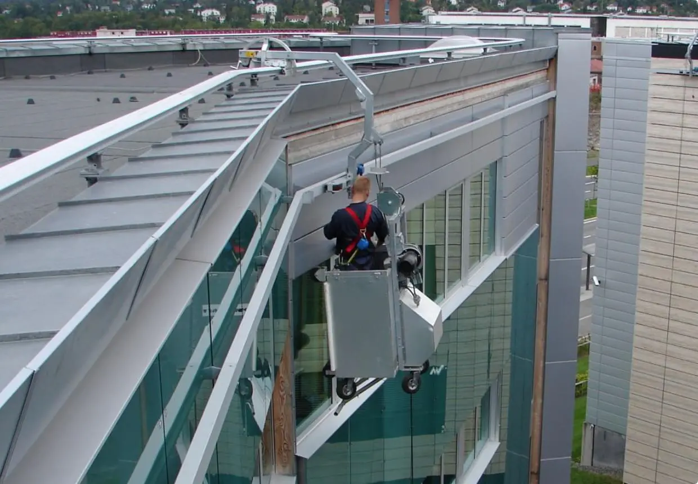

Монорельсовая система
СОФ для зданий высотой до 80 метров с кровлей любого типа (например, многоуровневой). Система состоит из специальной платформы и рельсовых путей, закрепленных вдоль фасада или на парапете здания.

Функциональная
и экономическая выгода
и экономическая выгода
Особенности применения
Несмотря на популярность фасадных подъемников, в ряде случаев экономически более целесообразно устанавливать монорельсовые системы. Речь идет о ситуациях, когда:
- высота здания сравнительно невелика (а с учетом российских строительных регламентов высотность большинства объектов – менее 75 метров);
- здание имеет эксплуатируемую кровлю и используется в качестве автостоянки, ресторанной веранды и т.д.;
- кровля здания не плоская, а многоуровневая.
Монорельсовая система проектируется с учетом архитектурных особенностей объекта, на котором она будет установлена. Установка данных СОФ возможна только на зданиях высотой до 80 метров. Это обеспечивает безопасность обслуживающего персонала и удобное использование системы.
Состав конструкции
Платформа, алюминиевый профиль и оцинкованные кронштейны для его крепления. А также моторизированная или механическая траверса, которая отвечает за горизонтальное перемещение платформы и может быть 1- или 2-подвесной.
Технические характеристики
| Максимальный рабочий радиус | 600 – 1200 мм |
| Рабочая высота | до 150 м |
| Общий вес | до 800 кг |
| Безопасная рабочая нагрузка | 250 кг * |
* - увеличение грузоподъемности по запросу